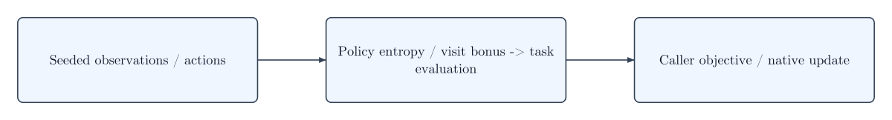
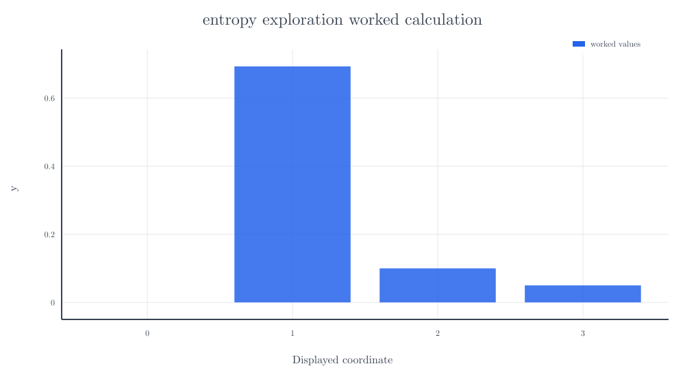
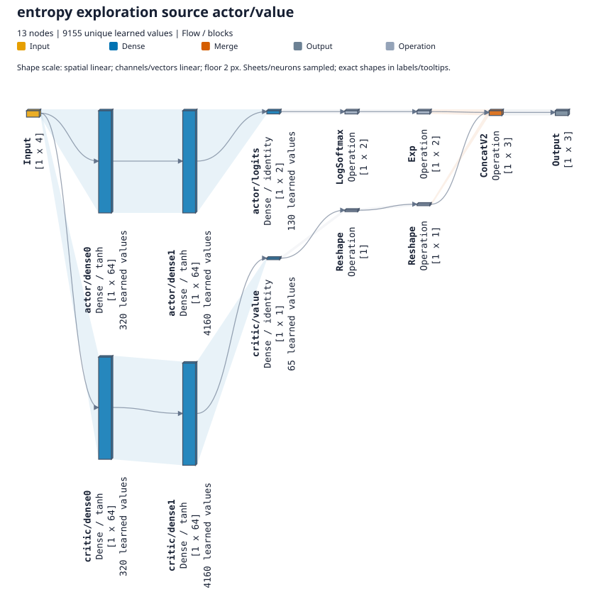
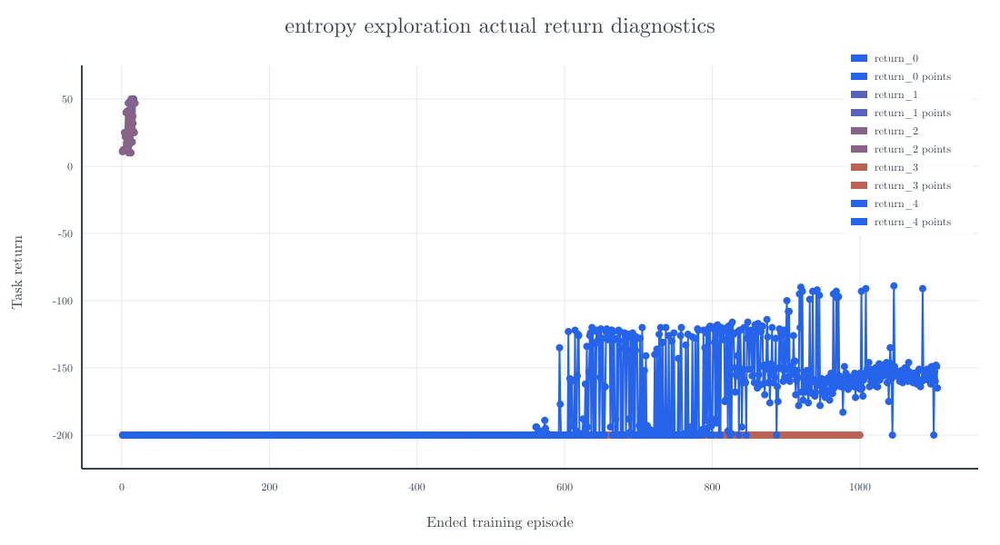
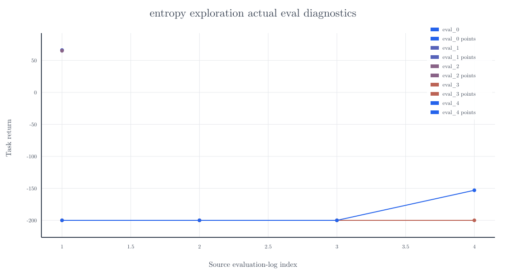

Entropy Regularization and Intrinsic Bonuses: Separate Exploration Controls
Abstract
Native actor/value graphs and explicit caller-owned objectives, gradients, optimizers and rollout loops reproduce the complete source protocol. Its default512-step bounded mode defers full convergence assertions; whole episodes/rollouts may finish past that nominal budget. Optional original full-training mode remains available.
Follow the policy update
Policy entropy / visit bonus -> task evaluation.
#include <dm/dm.hpp>
int main(){std::filesystem::create_directories("build");dm::graphics::Diagram d(29,1200);dm::graphics::DiagramNodeStyle s;s.width=14;s.height=5;s.font_size=23;d.node("input",{-18,0},"Seeded observations / actions",s).node("targets",{0,0},"Policy entropy / visit bonus -> task evaluation",s).node("step",{18,0},"Caller objective / native update",s).edge("input","targets").edge("targets","step").save_svg("build/entropy_exploration_method.svg");}
A hand-checkable calculation
A deterministic binary policy has entropy0; a uniform one has entropy log2. A count bonus with scale.1 drops from.1 on visit1 to.05 on visit4. Entropy and intrinsic reward are different controls.
#include <dm/dm.hpp>
int main(){std::filesystem::create_directories("build");std::vector<double>values{0,std::log(2.),.1,.1/std::sqrt(4.)};std::print("| coordinate | computed value |\n|---:|---:|\n");for(size_t i=0;i<values.size();++i)std::print("| {} | {:.9f} |\n",i,values[i]);dm::nn::save_npz("build/entropy_exploration_worked.npz",{{"values",dm::nn::from_vector(values)}});std::vector<double>x(values.size());std::iota(x.begin(),x.end(),0.);double low=std::min(0.,*std::min_element(values.begin(),values.end())),high=std::max(0.,*std::max_element(values.begin(),values.end())),span=std::max(1.,high-low);dm::graphics::RPlot::create().bars(x,values,"worked values",{37,99,235}).ylim(low-.05*span,high+.05*span).title("entropy exploration worked calculation").x_label("Displayed coordinate").size(1000,550).save_svg("build/entropy_exploration_worked.svg");}| coordinate | computed value |
|---|---|
| 0 | 0.000000000 |
| 1 | 0.693147181 |
| 2 | 0.100000000 |
| 3 | 0.050000000 |

Inspect the actual native actor/value architecture
This separate trace uses the source CartPole preset: four input coordinates, two64-wide tanh layers per actor/critic trunk and two actions. REINFORCE omits its critic; ACKTR retains manual pre-activation endpoints. Comparison reports show their critic-enabled variant. MountainCar in the entropy report instead uses two normalized inputs and three actions. The trace initializes its own store and does not alter training.
#include <dm/dm.hpp>
int main(){namespace n=dm::nn;namespace m=n::models;std::filesystem::create_directories("build");n::ParameterStore p(0),critic(1);n::Module network([&](const n::Tensor&x){auto path=m::BuildActorCritic(p,x,2,64);return n::concat({path.probs,n::expand_dims(path.value,1)},1);},"entropy exploration source actor/value");n::ModelPlotOptions options;options.detail=n::ModelPlotDetail::Blocks;options.sizing.minimum_extent=2;options.sizing.max_planes=2;network.plot(n::zeros({1,4}),options).save_svg("build/entropy_exploration_network.svg");}
Complete preserved source experiment
The original PgConfig caps the default nominal budget at512 steps and vector count at4, retaining64-wide networks, source seeds, full episodes/rollouts and all comparison variants. Full mode is selected by DATAMUNGE_EXAMPLES_FULL=1 and keeps each visible source budget and its convergence assertions. Every objective, native gradient/clipping/optimizer step and interaction loop remains editable below. This source is an important exception: its MountainCar branches override the nominal cap with200000 steps per branch, even in default mode. Those original budgets are retained; no short substitute run is used.
#include <dm/dm.hpp>
namespace report_capture {
inline dm::nn::NamedTensors arrays;inline int monitor_index=0,checkpoint_index=0;
template<class T>void Save(const std::string& name,const std::vector<T>&v){arrays.push_back({name,dm::nn::from_vector(v)});}
struct Checkpoint{dm::nn::ParameterStore& store;~Checkpoint(){auto tag=std::to_string(checkpoint_index++);for(const auto& name:store.names())arrays.push_back({"parameters_"+tag+"_"+name,store.at(name).detach().clone()});}};
struct Flush{~Flush(){if(!arrays.empty()){std::filesystem::create_directories("build");dm::nn::save_npz("build/entropy_exploration_source.npz",arrays);}}};inline Flush flush;
}
// CMD: just run-nn entropy_exploration
// Entropy regularization and exploration bonuses.
//
// Port of tflow's entropy_exploration. Two ways to keep a policy-gradient
// agent exploring:
// 1. An entropy bonus in the loss, -beta H(pi(.|s)), which penalises
// premature collapse to a deterministic policy. A2C on CartPole is
// trained with three coefficients and the final policy entropy shown.
// 2. An intrinsic reward for visiting rarely seen states, r+ = c / sqrt(N(s))
// over a coarse discretisation of the state (count-based exploration).
// MountainCar's reward is -1 everywhere until the flag, so the plain
// gradient has nothing to follow; the bonus pulls the agent toward
// states it has not seen, which is how it finds the hill.
//
// The TF graph becomes eager nn ops over a ParameterStore. The vectorised
// environments and the action sampling use the same std::mt19937_64 streams
// as TF; the weights use nn's generator, so results match TF statistically,
// not digit for digit. The vsim videos are replaced by PlayBestOfSeeds (same
// candidate episodes, printed), and TF's XLA hint has no counterpart.
// Extra options as in TF: bonus=<scale> grid=<cells per axis> mc_steps=<n>.
// Editable workflow support: checks.hpp
// Small runtime checks used by the executable nn examples. They stay on in
// Release builds and make the example exit nonzero on failure, so `just
// run-all-nn` doubles as a regression test against the recorded TF numbers.
// Editable workflow support: runtime.hpp
// Bounded demonstrations by default; opt into convergence experiments explicitly.
namespace example_runtime {
inline bool Full() {
const char* value = std::getenv("DATAMUNGE_EXAMPLES_FULL");
return value && std::string(value) == "1";
}
template <typename T> T Limit(T requested, T quick_limit) {
return Full() ? requested : std::min(requested, quick_limit);
}
inline void Describe() {
if (!Full())
std::cout << "Quick demonstration: bounded training; convergence metrics require "
"DATAMUNGE_EXAMPLES_FULL=1.\n";
}
} // namespace example_runtime
namespace check {
inline void Require(bool condition, const std::string& message) {
if (!condition) throw std::runtime_error(message);
}
// A short demonstration checks execution, derivatives and persistence; reaching
// a published accuracy/return requires the separately requested full schedule.
inline void TrainingQuality(bool condition, const std::string& message) {
if (example_runtime::Full()) Require(condition, message);
else std::cout << " full-training quality check deferred: " << message << '\n';
}
inline void Near(double actual, double expected, double tolerance, const std::string& message) {
if (!std::isfinite(actual) || !std::isfinite(expected) || std::abs(actual - expected) > tolerance)
throw std::runtime_error(message + ": got " + std::to_string(actual) + ", expected " + std::to_string(expected));
}
/// Expects `f` to throw; returns the message.
template <typename F>
std::string Throws(F&& f, const std::string& message) {
try {
f();
} catch (const std::exception& e) {
return e.what();
}
throw std::runtime_error(message + ": expected an exception");
}
} // namespace check
inline void Header(const std::string& title) {
const std::size_t pad = title.size() < 60 ? 60 - title.size() : 0;
std::cout << "\n== " << title << " " << std::string(pad, '=') << "\n";
}
// Editable workflow support: rl/classic_control.hpp
namespace rl {
using datamunge::rl::environments::kPi;
using datamunge::rl::environments::Clamp;
using datamunge::rl::environments::WrapAngle;
using datamunge::rl::environments::CartPole;
using datamunge::rl::environments::MountainCar;
using datamunge::rl::environments::MountainCarContinuous;
using datamunge::rl::environments::Pendulum;
using datamunge::rl::environments::Acrobot;
}
// Editable workflow support: rl/pg_common.hpp
// datamunge::nn port of tflow_examples src/common/rl/pg_common.h.
// Pieces shared by the policy-gradient and actor-critic examples: config,
// a softmax actor + value critic built from nn layers, action sampling,
// discounted returns and GAE on the host, and batched rollouts from a VecEnv.
// Monitor, Evaluate and Adam are reused from dqn_common.hpp.
//
// Changes from the TF version: BuildActorCritic runs the network on a
// tensor (eager) instead of adding graph nodes, ObsMatrix/IntVector return
// nn::Tensor (actions as int64), and TF hardware options are ignored.
// Editable workflow support: rl/dqn_common.hpp
// datamunge::nn port of tflow_examples src/common/rl/dqn_common.h.
// Pieces shared by the DQN-family examples: hyper-parameters, the epsilon
// schedule, a training monitor, Q-value heads (plain / dueling), greedy
// evaluation, the C51 distribution projection, and Adam with global-norm
// clipping (tflow's nn::Adam).
//
// Changes from the TF version: the TF hardware options (device=, threads=,
// xla=) are accepted and ignored, since nn runs eagerly on the CPU; QHead
// builds on a ParameterStore and returns a tensor instead of adding graph
// nodes; the noisy-network head (nn::NoisyDense) is not included, because
// datamunge::nn has no noisy layer yet.
// Editable workflow support: rl/env.hpp
namespace rl {
using datamunge::rl::environments::Obs;
using datamunge::rl::environments::Action;
using datamunge::rl::environments::ActionSpace;
using datamunge::rl::environments::StepResult;
using datamunge::rl::environments::Env;
using datamunge::rl::environments::EnvBase;
using datamunge::rl::environments::Transition;
using datamunge::rl::environments::TabularEnv;
}
// Editable workflow support: rl/utils.hpp
// datamunge::nn port: copied from tflow_examples src/common/rl/utils.h (TF-free code, unchanged).
// Small helpers shared by the RL examples: episode statistics, random and
// greedy rollouts, and printing.
namespace rl {
struct EpisodeStats {
std::vector<float> returns;
std::vector<int> lengths;
float mean_return() const {
return returns.empty() ? 0.f
: std::accumulate(returns.begin(), returns.end(), 0.f) / returns.size();
}
float mean_length() const {
return lengths.empty() ? 0.f
: std::accumulate(lengths.begin(), lengths.end(), 0.f) / lengths.size();
}
float min_return() const { return *std::min_element(returns.begin(), returns.end()); }
float max_return() const { return *std::max_element(returns.begin(), returns.end()); }
};
// Run `episodes` episodes of `env` choosing actions with `policy(obs)`.
// Uniformly random actions.
inline void PrintStats(const std::string& label, const EpisodeStats& s) {
std::printf(" %-32s return mean %8.2f min %8.2f max %8.2f length mean %6.1f\n",
label.c_str(), s.mean_return(), s.min_return(), s.max_return(), s.mean_length());
}
using dm::rl::foundations::ArgMax;using dm::rl::foundations::ArgMaxRandomTie;
inline std::string FormatObs(const Obs& o, int max_elems = 8) {
std::string s = "[";
for (size_t i = 0; i < o.size() && static_cast<int>(i) < max_elems; ++i) {
char buf[32];
std::snprintf(buf, sizeof buf, "%s%.3f", i ? " " : "", o[i]);
s += buf;
}
if (static_cast<int>(o.size()) > max_elems) s += " ...";
return s + "]";
}
} // namespace rl
namespace rl {
namespace nn = datamunge::nn;
struct DqnConfig {
int steps = 50000; // environment steps
int warmup = 1000; // steps before training starts
int batch = 64;
int buffer = 50000;
float gamma = 0.98f; // 0.99 is the usual choice; 0.98 bounds Q by 50 and makes CartPole far more stable
float lr = 5e-4f;
float clip_norm = 10.f;
int target_sync = 500; // hard target update period (steps), used when tau == 1
float tau = 0.005f; // target <- tau * online + (1 - tau) * target every step; tau = 1 means a hard copy every target_sync steps
float eps_start = 1.f, eps_end = 0.05f;
int eps_decay_steps = 10000;
int hidden = 128;
int train_every = 2;
int log_every = 5000;
int eval_every = 5000;
int eval_episodes = 5;
uint64_t seed = 0;
};
// TF-only options that the ports accept and ignore.
inline bool IsHardwareOption(const std::string& key) {
return key == "device" || key == "threads" || key == "intra_threads" || key == "inter_threads" || key == "xla";
}
// Overrides from the command line, e.g. `just run-nn dqn steps=50000 lr=5e-4`.
inline void ParseConfig(int argc, char** argv, DqnConfig* c) {
for (int i = 1; i < argc; ++i) {
const std::string arg = argv[i];
const size_t eq = arg.find('=');
if (eq == std::string::npos) continue;
const std::string key = arg.substr(0, eq);
const float v = std::strtof(arg.c_str() + eq + 1, nullptr);
if (IsHardwareOption(key)) continue;
if (key == "steps") c->steps = static_cast<int>(v);
else if (key == "warmup") c->warmup = static_cast<int>(v);
else if (key == "batch") c->batch = static_cast<int>(v);
else if (key == "buffer") c->buffer = static_cast<int>(v);
else if (key == "gamma") c->gamma = v;
else if (key == "lr") c->lr = v;
else if (key == "clip_norm") c->clip_norm = v;
else if (key == "target_sync") c->target_sync = static_cast<int>(v);
else if (key == "tau") c->tau = v;
else if (key == "eps_start") c->eps_start = v;
else if (key == "eps_end") c->eps_end = v;
else if (key == "eps_decay_steps") c->eps_decay_steps = static_cast<int>(v);
else if (key == "hidden") c->hidden = static_cast<int>(v);
else if (key == "train_every") c->train_every = static_cast<int>(v);
else if (key == "log_every") c->log_every = static_cast<int>(v);
else if (key == "eval_every") c->eval_every = static_cast<int>(v);
else if (key == "seed") c->seed = static_cast<uint64_t>(v);
else if (key != "task" && key != "game") std::fprintf(stderr, "unknown option %s\n", arg.c_str());
}
if (!example_runtime::Full()) {
c->steps = std::min(c->steps, 512);
c->warmup = std::min(c->warmup, 32);
c->batch = std::min(c->batch, 8);
c->log_every = c->eval_every = std::max(1, c->steps);
c->eval_episodes = 1;
c->eps_decay_steps = std::min(c->eps_decay_steps, c->steps);
example_runtime::Describe();
}
}
inline float Epsilon(const DqnConfig& c, int step) {
const float frac = std::min(1.f, static_cast<float>(step) / c.eps_decay_steps);
return c.eps_start + frac * (c.eps_end - c.eps_start);
}
// Greedy evaluation with any action function.
inline float Evaluate(Env& env, const std::function<int(const Obs&)>& act, int episodes, uint64_t seed) {
double total = 0;
for (int e = 0; e < episodes; ++e) {
Obs obs = env.reset(seed + e);
while (true) {
StepResult r = env.step(act(obs));
total += r.reward;
obs = r.obs;
if (r.done()) break;
}
}
return static_cast<float>(total / episodes);
}
// Tracks episode returns and losses and prints one line per log period.
class Monitor {
public:
explicit Monitor(const DqnConfig& cfg, const char* third_column = "eps") : cfg_(cfg) {
std::printf(" %8s %8s %12s %7s %10s %10s\n", "step", "episodes", "return(20)", third_column, "loss", "eval");
}
void EndEpisode(float ret) { returns_.push_back(ret); }
~Monitor(){auto tag=std::to_string(id_);report_capture::Save("return_"+tag,returns_);report_capture::Save("step_"+tag,steps_);report_capture::Save("eval_"+tag,evaluation_);report_capture::Save("loss_"+tag,mean_losses_);}
void AddLoss(float loss) { losses_.push_back(loss); }
int episodes() const { return static_cast<int>(returns_.size()); }
float RecentReturn(int n = 20) const {
if (returns_.empty()) return 0.f;
const size_t from = returns_.size() > static_cast<size_t>(n) ? returns_.size() - n : 0;
return std::accumulate(returns_.begin() + from, returns_.end(), 0.f) / (returns_.size() - from);
}
void Log(int step, float eps, float eval_return) {
const float loss = losses_.empty() ? 0.f : std::accumulate(losses_.begin(), losses_.end(), 0.f) / losses_.size();
steps_.push_back(step);evaluation_.push_back(eval_return);mean_losses_.push_back(loss);
losses_.clear();
char eval[16];
if (std::isnan(eval_return)) std::snprintf(eval, sizeof eval, "%10s", "");
else std::snprintf(eval, sizeof eval, "%10.1f", eval_return);
std::printf(" %8d %8d %12.1f %7.3f %10.4f %s\n", step, episodes(), RecentReturn(), eps, loss, eval);
std::fflush(stdout);
}
private:
int id_=report_capture::monitor_index++;std::vector<double>steps_,evaluation_,mean_losses_;
DqnConfig cfg_;
std::vector<float> returns_, losses_;
};
using dm::nn::models::ProjectDistribution;
// One observation as a [1, obs_dim] tensor.
inline nn::Tensor Row(const Obs& o) { return nn::from_vector(o, {1, static_cast<std::int64_t>(o.size())}); }
} // namespace rl
// Editable workflow support: rl/vec_env.hpp
namespace rl {
using datamunge::rl::environments::VecStep;
using datamunge::rl::environments::VecEnv;
}
namespace rl {
struct PgConfig {
int steps = 100000; // environment steps in total (all envs)
float gamma = 0.99f;
float lam = 0.95f; // GAE lambda
float lr = 1e-3f;
float clip_norm = 0.5f;
float entropy_coef = 0.01f;
float value_coef = 0.5f;
int hidden = 64;
int n_envs = 8; // parallel environments for batched rollouts
int n_steps = 5; // rollout length per update
int log_every = 10000;
int eval_every = 10000;
int eval_episodes = 5;
uint64_t seed = 0;
};
// `just run-nn a2c steps=200000 lr=5e-4 n_envs=16`
inline void ParsePgConfig(int argc, char** argv, PgConfig* c) {
for (int i = 1; i < argc; ++i) {
const std::string arg = argv[i];
const size_t eq = arg.find('=');
if (eq == std::string::npos) continue;
const std::string key = arg.substr(0, eq);
const float v = std::strtof(arg.c_str() + eq + 1, nullptr);
if (IsHardwareOption(key)) continue;
if (key == "steps") c->steps = static_cast<int>(v);
else if (key == "gamma") c->gamma = v;
else if (key == "lam") c->lam = v;
else if (key == "lr") c->lr = v;
else if (key == "clip_norm") c->clip_norm = v;
else if (key == "entropy") c->entropy_coef = v;
else if (key == "value_coef") c->value_coef = v;
else if (key == "hidden") c->hidden = static_cast<int>(v);
else if (key == "n_envs") c->n_envs = static_cast<int>(v);
else if (key == "n_steps") c->n_steps = static_cast<int>(v);
else if (key == "log_every") c->log_every = static_cast<int>(v);
else if (key == "eval_every") c->eval_every = static_cast<int>(v);
else if (key == "seed") c->seed = static_cast<uint64_t>(v);
else if (key != "task" && key != "game") std::fprintf(stderr, "unknown option %s\n", arg.c_str());
}
if (!example_runtime::Full()) {
c->steps = std::min(c->steps, 512);
c->n_envs = std::min(c->n_envs, 4);
c->log_every = c->eval_every = std::max(1, c->steps);
c->eval_episodes = 1;
example_runtime::Describe();
}
}
// A DqnConfig carrying the logging fields, for the shared Monitor.
inline DqnConfig MonitorConfig(const PgConfig& c) {
DqnConfig d;
d.log_every = c.log_every;
d.eval_every = c.eval_every;
d.eval_episodes = c.eval_episodes;
return d;
}
// Softmax policy over discrete actions plus (optionally) a state-value head
// on its own trunk. All outputs are per row of `obs` [B, obs_dim].
using dm::nn::models::ActorCritic;using dm::nn::models::BuildActorCritic;
using dm::rl::returns::DiscountedReturns;using dm::rl::returns::Gae;
inline nn::Tensor LogProbOf(const nn::Tensor& logp,const nn::Tensor& actions,int count){if(logp.size(1)!=count)throw std::invalid_argument("action width");return dm::rl::foundations::CategoricalActionLogProbability(logp,actions);}
inline int SampleAction(const float* probs,int n,std::mt19937_64& rng){return dm::rl::foundations::SampleCategoricalAction(probs,n,rng);}
// Rows of observations as a float [n, obs_dim] tensor.
inline nn::Tensor ObsMatrix(const std::vector<Obs>&rows){return dm::rl::foundations::ObservationMatrix(rows);}
// Actions as an int64 [n] tensor.
inline nn::Tensor IntVector(const std::vector<int>& v) {
return nn::from_vector(std::vector<std::int64_t>(v.begin(), v.end()), {static_cast<std::int64_t>(v.size())});
}
inline nn::Tensor FloatVector(const std::vector<float>& v) {
return nn::from_vector(v, {static_cast<std::int64_t>(v.size())});
}
// n_steps x n_envs rollouts from a VecEnv, stored env-major so each
// environment's sub-trajectory is contiguous for GAE.
using dm::rl::returns::Rollout;
// Collects a rollout. `policy(obs_batch, &probs [n_envs * A], &values [n_envs])`
// runs the network; episode returns are reported to the monitor.
class RolloutCollector {
public:
RolloutCollector(VecEnv& venv, int n_actions, uint64_t seed)
: venv_(venv), A_(n_actions), rng_(seed), obs_(venv.reset()), ep_return_(venv.size(), 0.f) {}
template <typename PolicyFn>
Rollout Collect(int n_steps, PolicyFn policy, Monitor* monitor) {
const int n = venv_.size();
Rollout ro;
ro.n_envs = n;
ro.n_steps = n_steps;
ro.obs.assign(n, {});
ro.act.assign(n, {});
ro.rew.assign(n, {});
ro.done.assign(n, {});
ro.val.assign(n, {});
ro.logp.assign(n, {});
std::vector<float> probs, values;
std::vector<Action> actions(n);
for (int t = 0; t < n_steps; ++t) {
policy(obs_, &probs, &values);
for (int i = 0; i < n; ++i) {
const int a = SampleAction(&probs[i * A_], A_, rng_);
actions[i] = Action(a);
ro.obs[i].push_back(obs_[i]);
ro.act[i].push_back(a);
ro.val[i].push_back(values[i]);
ro.logp[i].push_back(std::log(std::max(probs[i * A_ + a], 1e-8f)));
}
VecStep s = venv_.step(actions);
for (int i = 0; i < n; ++i) {
ro.rew[i].push_back(s.reward[i]);
ro.done[i].push_back(s.terminated[i] ? 1.f : 0.f); // truncation still bootstraps
ep_return_[i] += s.reward[i];
if (s.done(i)) {
if (monitor) monitor->EndEpisode(ep_return_[i]);
ep_return_[i] = 0;
}
// On truncation the next observation is a fresh episode; bootstrap
// from the final observation instead would be more exact, but the
// reset observation is what we have in batch form.
}
obs_ = s.obs;
total_steps_ += n;
}
policy(obs_, &probs, &values);
ro.last_obs = obs_;
ro.last_val = values;
return ro;
}
long total_steps() const { return total_steps_; }
private:
VecEnv& venv_;
int A_;
std::mt19937_64 rng_;
std::vector<Obs> obs_;
std::vector<float> ep_return_;
long total_steps_ = 0;
};
} // namespace rl
// Editable workflow support: rl/play_best.hpp
// datamunge::nn port helper standing in for tflow's vsim_studio.h RecordBest.
//
// RecordBest plays `candidates` seeded episodes (seeds seed .. seed+candidates-1) without
// filming, then films the one with the highest return. PlayBestOfSeeds runs the same candidate
// episodes, prints the same "best of N" line, and replays the best one with PlayEpisode
// (common/rl/playback.hpp), which prints its steps and return instead of writing a video.
// Editable workflow support: rl/playback.hpp
// datamunge::nn port helper standing in for tflow's src/common/rl/vsim_studio.h recorders.
//
// tflow films episodes with vsim's renderer and ffmpeg (RecordEpisode); both are out of scope
// for the datamunge ports. PlayEpisode runs exactly the episode RecordEpisode would film (same
// reset seed, the same Decide/Hud bookkeeping, one env step per loop) without a video and prints
// the same summary line, so the steps and return can be compared with tflow's "recorded ..."
// line. tflow's recorder also stops when the film reaches `max_frames`; frames are not steps
// (they depend on the world's frame rate), so PlayEpisode ignores that cap: for every episode
// the 6.1 examples film, the episode ends before the film is full.
// Editable workflow support: rl/hud.hpp
// datamunge::nn port of tflow_examples src/common/rl/hud.h: Decision, its helpers and the Hud
// state are copied unchanged; DrawHud (drawing onto a video::Canvas) is dropped, since video
// recording is out of scope for the ports. Policies written for tflow's recorders still compile.
// The overlay on the videos: the move the agent makes and what it expects.
//
// A Decision is one move as the agent explains it: the action, the estimate
// it holds for every candidate action (Q-values, action probabilities, visit
// counts, planned returns, ...), which candidate it took, and the return it
// expects from the current state. The recorders in vsim_studio.h accept
// policies that return a Decision instead of a bare Action and draw it on
// every frame together with the step count, the last reward and the return
// so far (the Hud); a plain policy still gets the move, reward and return
// shown. DrawHud draws onto a video::Canvas, so the videos drawn without the
// 3D renderer (Atari) carry the same overlay.
//
// The helpers cover the usual cases: GreedyQ for value-based agents (the
// argmax, the Q row and max_a Q as the expected return), GreedyPi for a
// policy's probabilities with the critic's V(s), and Explain for an action
// with one estimate attached (a continuous torque with its critic value, a
// planner's first action with the planned return).
namespace rl {
struct Decision {
Action action;
std::string label; // the move in words ("right", "torque +1.3"); from the action space when empty
std::string kind; // what `values` are: "Q(s,a)", "pi(a|s)", "visits", "planned return"
std::vector<std::string> labels; // one per candidate; the environment's action names when empty
std::vector<float> values; // the agent's estimate per candidate action (empty when it has none)
int chosen = -1; // the candidate taken (-1: the action is not one of them)
float value = NAN; // the return the agent expects from here (V(s), max_a Q, root value, ...)
std::string value_name = "expected return";
float lo = NAN, hi = NAN; // the bar scale for `values`; NaN: from the values themselves (and 0)
int decimals = -1; // digits after the point for `values` (-1: by magnitude)
std::string note; // one free line, e.g. "CEM over 15 steps" or "epsilon 0.05"
Decision() = default;
explicit Decision(Action a) : action(std::move(a)) {}
// A Decision stands in for its action, so one policy serves both the
// recorders and the plain episode runners (RunEpisodes, env.step).
operator const Action&() const { return action; } // NOLINT: implicit by design
};
// Greedy over Q(s, .): the argmax, the whole row, and max_a Q as the expected return.
inline Decision GreedyQ(const float* q, int n, const std::string& kind = "Q(s,a)") {
Decision d;
d.values.assign(q, q + n);
d.chosen = static_cast<int>(std::max_element(q, q + n) - q);
d.action = Action(d.chosen);
d.kind = kind;
d.value = q[d.chosen];
return d;
}
inline Decision GreedyQ(const std::vector<float>& q, const std::string& kind = "Q(s,a)") {
return GreedyQ(q.data(), static_cast<int>(q.size()), kind);
}
// The most probable action of a stochastic policy, with the probabilities and
// (when the agent has a critic) V(s).
inline Decision GreedyPi(const std::vector<float>& probs, float v = NAN, const std::string& kind = "pi(a|s)") {
Decision d;
d.values = probs;
d.chosen = static_cast<int>(std::max_element(probs.begin(), probs.end()) - probs.begin());
d.action = Action(d.chosen);
d.kind = kind;
d.lo = 0.f, d.hi = 1.f;
d.decimals = 2;
d.value = v;
d.value_name = "V(s)";
return d;
}
// An action with one estimate attached: a torque and its critic value, a
// planner's action and the return of its plan.
inline Decision Explain(Action action, float value, const std::string& value_name = "expected return", const std::string& note = "") {
Decision d(std::move(action));
d.value = value;
d.value_name = value_name;
d.note = note;
return d;
}
// An action with a remark for the overlay: what a hand-written rule looked at.
inline Decision Note(Action action, const std::string& note) {
Decision d(std::move(action));
d.note = note;
return d;
}
// A number with as many decimals as its size warrants.
inline std::string HudNum(float v, int decimals = -1) {
if (std::isnan(v)) return "-";
char buf[32];
if (decimals < 0) decimals = std::abs(v) >= 100 ? 0 : std::abs(v) >= 10 ? 1 : 2;
std::snprintf(buf, sizeof buf, "%.*f", decimals, v);
return buf;
}
inline std::string HudSigned(float v) {
if (std::isnan(v)) return "-";
char buf[32];
std::snprintf(buf, sizeof buf, "%+.2f", v);
return buf;
}
// Everything the overlay shows: the episode so far and the current decision.
// The recorders fill it; Complete() derives the labels from the action space.
struct Hud {
std::string title; // optional top line
int step = 0;
float reward = NAN; // the last reward (NaN before the first step)
float ret = 0; // the return so far
bool done = false, truncated = false;
bool has_decision = false;
Decision decision;
ActionSpace space;
std::vector<std::string> names; // the environment's action names (discrete) or action dimensions (continuous)
void Reset(const ActionSpace& s, std::vector<std::string> action_names) {
step = 0, reward = NAN, ret = 0, done = truncated = false, has_decision = false;
decision = Decision();
space = s;
names = std::move(action_names);
}
// The move taken; the step that follows reports its reward through Observe().
void Choose(Decision d) {
decision = std::move(d);
has_decision = true;
Complete();
}
void Observe(const StepResult& r) {
++step;
reward = r.reward;
ret += r.reward;
done = r.done();
truncated = r.truncated;
}
std::string NameOf(int i, const char* prefix) const {
if (i >= 0 && i < static_cast<int>(names.size())) return names[i];
return prefix + std::to_string(i);
}
// Fills the action label and the candidate labels the policy left empty.
void Complete() {
Decision& d = decision;
if (d.label.empty()) {
if (space.kind == ActionSpace::kDiscrete) {
d.label = NameOf(d.action.discrete, "action ");
} else {
for (size_t i = 0; i < d.action.continuous.size(); ++i) {
if (i) d.label += " ";
if (i < names.size()) d.label += names[i] + " ";
d.label += HudSigned(d.action.continuous[i]);
}
}
}
if (d.labels.size() != d.values.size()) {
d.labels.clear();
const bool per_action = space.kind == ActionSpace::kDiscrete && static_cast<int>(d.values.size()) == space.n;
for (size_t i = 0; i < d.values.size(); ++i) d.labels.push_back(per_action ? NameOf(static_cast<int>(i), "action ") : std::to_string(i));
}
}
};
} // namespace rl
namespace rl {
// The policy's decision for `obs`, as in vsim_studio.h: a Decision passes through, a bare
// action (an int, a vector or an Action) is wrapped.
template <typename PolicyFn>
Decision Decide(PolicyFn& policy, const Obs& obs) {
if constexpr (std::is_same_v<std::decay_t<decltype(policy(obs))>, Decision>) return policy(obs);
else return Decision(Action(policy(obs)));
}
struct Playback {
int steps = 0;
float ret = 0;
Hud hud; // the overlay state after the last step (decision, reward, return)
};
// Plays one episode of `policy` from env.reset(seed); `after_step(env, hud)` is called after
// the reset (step 0) and after every step, e.g. to snapshot frames.
template <typename Env, typename PolicyFn, typename AfterStep>
Playback PlayEpisode(Env& env, PolicyFn&& policy, const std::string& name, uint64_t seed, AfterStep after_step) {
Playback pb;
pb.hud.Reset(env.action_space(), env.action_names());
Obs obs = env.reset(seed);
after_step(static_cast<const Env&>(env), static_cast<const Hud&>(pb.hud));
while (true) {
pb.hud.Choose(Decide(policy, obs));
const StepResult r = env.step(pb.hud.decision.action);
pb.hud.Observe(r);
pb.ret += r.reward;
++pb.steps;
obs = r.obs;
after_step(static_cast<const Env&>(env), static_cast<const Hud&>(pb.hud));
if (r.done()) break;
}
std::printf(" played %s (video omitted): %d steps, return %.1f\n", name.c_str(), pb.steps, pb.ret);
return pb;
}
template <typename Env, typename PolicyFn>
Playback PlayEpisode(Env& env, PolicyFn&& policy, const std::string& name, uint64_t seed) {
return PlayEpisode(env, std::forward<PolicyFn>(policy), name, seed, [](const Env&, const Hud&) {});
}
} // namespace rl
namespace rl {
template <typename Env, typename PolicyFn>
Playback PlayBestOfSeeds(Env& env, PolicyFn&& policy, const std::string& name, uint64_t seed, int candidates = 5) {
uint64_t best_seed = seed;
float best = -std::numeric_limits<float>::infinity();
for (int c = 0; c < candidates; ++c) {
float ret = 0;
Obs obs = env.reset(seed + c);
while (true) {
const StepResult r = env.step(Decide(policy, obs).action);
ret += r.reward;
obs = r.obs;
if (r.done()) break;
}
if (ret > best) best = ret, best_seed = seed + c;
}
std::printf(" best of %d episodes (return %.1f):\n", candidates, best);
return PlayEpisode(env, std::forward<PolicyFn>(policy), name, best_seed);
}
} // namespace rl
namespace nn = datamunge::nn;
using nn::Tensor;
namespace {
struct Result {
float eval, entropy, success_rate;
};
// MountainCar with observations scaled to about [-1, 1]: the raw velocity
// (+-0.07) is far too small for an unnormalised network to use.
using NormalizedMountainCar=dm::rl::environments::NormalizedMountainCar;
using Explain = std::function<rl::Decision(const rl::Obs&)>;
// A2C with GAE; `bonus_fn(obs)` adds an intrinsic reward (0 for none).
// `film` replays the greedy policy's best episode once training is done.
std::string Tag(float x) {
std::string t = std::to_string(x).substr(0, 4);
std::replace(t.begin(), t.end(), '.', '_');
return t;
}
} // namespace
int main(int argc, char** argv) {
rl::PgConfig cfg;
cfg.n_steps = 20;
cfg.steps = 60000;
cfg.log_every = 20000;
cfg.eval_every = 20000;
rl::ParsePgConfig(argc, argv, &cfg);
// Extra knobs for part 2: bonus=<scale> grid=<cells per axis> mc_steps=<n>
float bonus_scale = 0.1f;
int grid = 40, mc_steps = 200000;
for (int i = 1; i < argc; ++i) {
const std::string a = argv[i];
if (a.rfind("bonus=", 0) == 0)
bonus_scale = std::strtof(a.c_str() + 6, nullptr);
else if (a.rfind("grid=", 0) == 0)
grid = std::atoi(a.c_str() + 5);
else if (a.rfind("mc_steps=", 0) == 0)
mc_steps = std::atoi(a.c_str() + 9);
}
auto no_bonus = [](const rl::Obs&) { return 0.f; };
std::printf("#### Part 1: entropy regularisation on CartPole\n");
rl::CartPole cartpole_eval;
std::vector<std::pair<float, Result>> part1;
for (float coef : {0.f, 0.01f, 0.1f}) {
rl::PgConfig c = cfg;
c.entropy_coef = coef;
auto film = [&](const Explain& explain) {
rl::PlayBestOfSeeds(
cartpole_eval, explain, "entropy_exploration_coef_" + Tag(coef) + "_cartpole", 4242);
};
part1.push_back(
{coef, [&]() -> Result {
std::printf(
"\n== %s: entropy coef %.3f, %d steps\n",
"A2C on CartPole",
c.entropy_coef,
c.steps);
rl::VecEnv venv([] { return std::make_unique<rl::CartPole>(); }, c.n_envs, c.seed);
const int obs_dim = venv.obs_size(), A = venv.action_space().n;
nn::ParameterStore params(c.seed);
auto net = [&](const Tensor& obs) {
return rl::BuildActorCritic(params, obs, A, c.hidden);
};
{
nn::NoGradGuard no_grad;
net(nn::zeros({1, obs_dim}));
}
nn::OptimizerConfig optimizer_config;
optimizer_config.kind = nn::OptimizerKind::Adam;
nn::Optimizer optimizer(params, c.lr, optimizer_config);
report_capture::Checkpoint parameter_checkpoint{params};
rl::Monitor monitor(rl::MonitorConfig(c), "entropy");
auto policy = [&](const std::vector<rl::Obs>& o,
std::vector<float>* probs,
std::vector<float>* values) {
nn::NoGradGuard no_grad;
const rl::ActorCritic ac = net(rl::ObsMatrix(o));
*probs = ac.probs.to_vector<float>();
*values = ac.value.to_vector<float>();
};
auto explain = [&](const rl::Obs& o) { // pi(.|s) and V(s): the most probable action, for
// evaluation and the replay
nn::NoGradGuard no_grad;
const rl::ActorCritic ac = net(rl::Row(o));
return rl::GreedyPi(ac.probs.to_vector<float>(), ac.value.item<float>());
};
auto greedy = [&](const rl::Obs& o) { return explain(o).action.discrete; };
rl::RolloutCollector collector(venv, A, c.seed + 1);
float ent = 0;
long next_log = c.log_every;
while (collector.total_steps() < c.steps) {
rl::Rollout ro = collector.Collect(c.n_steps, policy, &monitor);
std::vector<float> advantages, returns, a_i, r_i;
for (int i = 0; i < ro.n_envs; ++i) {
std::vector<float> shaped = ro.rew[i];
for (int t = 0; t < ro.n_steps; ++t)
shaped[t] += no_bonus(ro.obs[i][t]); // intrinsic reward
rl::Gae(shaped, ro.val[i], ro.done[i], ro.last_val[i], c.gamma, c.lam, &a_i, &r_i);
advantages.insert(advantages.end(), a_i.begin(), a_i.end());
returns.insert(returns.end(), r_i.begin(), r_i.end());
}
const rl::ActorCritic ac = net(rl::ObsMatrix(ro.FlatObs()));
const Tensor logp_a = rl::LogProbOf(ac.logp, rl::IntVector(ro.FlatAct()), A);
const Tensor entropy = nn::mean(ac.entropy, {0});
const Tensor loss =
-nn::mean(logp_a * rl::FloatVector(advantages), {0}) +
c.value_coef * nn::mean(nn::square(rl::FloatVector(returns) - ac.value), {0}) -
c.entropy_coef * entropy;
auto gradients = nn::grad(loss, optimizer.parameters());
if (c.clip_norm > 0)
gradients = nn::clip_by_global_norm(gradients, c.clip_norm).first;
optimizer.step(gradients);
monitor.AddLoss(loss.item<float>());
ent = entropy.item<float>();
check::Require(
std::isfinite(loss.item<float>()) && ent >= 0 && ent <= std::log(double(A)) + 1e-5,
"finite loss, entropy in [0, log A]");
if (collector.total_steps() >= next_log) {
monitor.Log(
static_cast<int>(collector.total_steps()),
ent,
next_log % c.eval_every == 0
? rl::Evaluate(cartpole_eval, greedy, c.eval_episodes, 1000 + next_log)
: NAN);
next_log += c.log_every;
}
}
Result res{0, ent, 0};
int successes = 0;
for (int e = 0; e < 20; ++e) {
rl::Obs o = cartpole_eval.reset(777 + e);
float r_total = 0;
while (true) {
rl::StepResult sr = cartpole_eval.step(greedy(o));
r_total += sr.reward;
o = sr.obs;
if (sr.done())
break;
}
res.eval += r_total / 20;
successes += r_total > 1e9f;
}
res.success_rate = successes / 20.f;
std::printf(
" final greedy evaluation over 20 episodes: %.1f, policy entropy %.3f\n",
res.eval,
res.entropy);
film(explain);
return res;
}()});
}
std::printf(
"\n#### Part 2: count-based exploration bonus on MountainCar (reward -1 until the flag)\n");
// Visit counts over a grid of (position, velocity); shared by all
// environments and persisting across episodes.
std::map<std::pair<int, int>, int> counts;
std::printf(
" bonus %.2f / sqrt(N(cell)) over a %dx%d grid, %d steps\n",
bonus_scale,
grid,
grid,
mc_steps);
auto count_bonus = [&](const rl::Obs& o) {
// o is the normalised observation, both coordinates in about [-1, 1].
const int px = std::min(grid - 1, std::max(0, static_cast<int>((o[0] + 1.f) / 2.f * grid)));
const int vx = std::min(grid - 1, std::max(0, static_cast<int>((o[1] + 1.f) / 2.f * grid)));
const int n = ++counts[{px, vx}];
return bonus_scale / std::sqrt(static_cast<float>(n));
};
{ // the bonus decays as 1 / sqrt(N) in one cell, then the counts are cleared
const float b1 = count_bonus({0.f, 0.f}), b2 = count_bonus({0.f, 0.f}),
b4 = (count_bonus({0.f, 0.f}), count_bonus({0.f, 0.f}));
check::Near(b1, bonus_scale, 1e-6, "first visit earns the full bonus");
check::Near(b2, bonus_scale / std::sqrt(2.0), 1e-6, "second visit earns bonus / sqrt(2)");
check::Near(b4, bonus_scale / 2, 1e-6, "fourth visit earns bonus / 2");
counts.clear();
}
NormalizedMountainCar mc_eval;
auto film_mc = [&](const std::string& name) {
return
[&, name](const Explain& explain) { rl::PlayBestOfSeeds(mc_eval, explain, name, 4242, 5); };
};
rl::PgConfig mc = cfg;
mc.steps = mc_steps;
mc.entropy_coef = 0.01f;
mc.log_every = 50000;
mc.eval_every = 50000;
const Result plain = [&]() -> Result {
std::printf(
"\n== %s: entropy coef %.3f, %d steps\n",
"A2C on MountainCar, no bonus",
mc.entropy_coef,
mc.steps);
rl::VecEnv venv([] { return std::make_unique<NormalizedMountainCar>(); }, mc.n_envs, mc.seed);
const int obs_dim = venv.obs_size(), A = venv.action_space().n;
nn::ParameterStore params(mc.seed);
auto net = [&](const Tensor& obs) { return rl::BuildActorCritic(params, obs, A, mc.hidden); };
{
nn::NoGradGuard no_grad;
net(nn::zeros({1, obs_dim}));
}
nn::OptimizerConfig optimizer_config;
optimizer_config.kind = nn::OptimizerKind::Adam;
nn::Optimizer optimizer(params, mc.lr, optimizer_config);
report_capture::Checkpoint parameter_checkpoint{params};
rl::Monitor monitor(rl::MonitorConfig(mc), "entropy");
auto policy =
[&](const std::vector<rl::Obs>& o, std::vector<float>* probs, std::vector<float>* values) {
nn::NoGradGuard no_grad;
const rl::ActorCritic ac = net(rl::ObsMatrix(o));
*probs = ac.probs.to_vector<float>();
*values = ac.value.to_vector<float>();
};
auto explain = [&](const rl::Obs& o) { // pi(.|s) and V(s): the most probable action, for
// evaluation and the replay
nn::NoGradGuard no_grad;
const rl::ActorCritic ac = net(rl::Row(o));
return rl::GreedyPi(ac.probs.to_vector<float>(), ac.value.item<float>());
};
auto greedy = [&](const rl::Obs& o) { return explain(o).action.discrete; };
rl::RolloutCollector collector(venv, A, mc.seed + 1);
float ent = 0;
long next_log = mc.log_every;
while (collector.total_steps() < mc.steps) {
rl::Rollout ro = collector.Collect(mc.n_steps, policy, &monitor);
std::vector<float> advantages, returns, a_i, r_i;
for (int i = 0; i < ro.n_envs; ++i) {
std::vector<float> shaped = ro.rew[i];
for (int t = 0; t < ro.n_steps; ++t)
shaped[t] += no_bonus(ro.obs[i][t]); // intrinsic reward
rl::Gae(shaped, ro.val[i], ro.done[i], ro.last_val[i], mc.gamma, mc.lam, &a_i, &r_i);
advantages.insert(advantages.end(), a_i.begin(), a_i.end());
returns.insert(returns.end(), r_i.begin(), r_i.end());
}
const rl::ActorCritic ac = net(rl::ObsMatrix(ro.FlatObs()));
const Tensor logp_a = rl::LogProbOf(ac.logp, rl::IntVector(ro.FlatAct()), A);
const Tensor entropy = nn::mean(ac.entropy, {0});
const Tensor loss =
-nn::mean(logp_a * rl::FloatVector(advantages), {0}) +
mc.value_coef * nn::mean(nn::square(rl::FloatVector(returns) - ac.value), {0}) -
mc.entropy_coef * entropy;
auto gradients = nn::grad(loss, optimizer.parameters());
if (mc.clip_norm > 0)
gradients = nn::clip_by_global_norm(gradients, mc.clip_norm).first;
optimizer.step(gradients);
monitor.AddLoss(loss.item<float>());
ent = entropy.item<float>();
check::Require(
std::isfinite(loss.item<float>()) && ent >= 0 && ent <= std::log(double(A)) + 1e-5,
"finite loss, entropy in [0, log A]");
if (collector.total_steps() >= next_log) {
monitor.Log(
static_cast<int>(collector.total_steps()),
ent,
next_log % mc.eval_every == 0
? rl::Evaluate(mc_eval, greedy, mc.eval_episodes, 1000 + next_log)
: NAN);
next_log += mc.log_every;
}
}
Result res{0, ent, 0};
int successes = 0;
for (int e = 0; e < 20; ++e) {
rl::Obs o = mc_eval.reset(777 + e);
float r_total = 0;
while (true) {
rl::StepResult sr = mc_eval.step(greedy(o));
r_total += sr.reward;
o = sr.obs;
if (sr.done())
break;
}
res.eval += r_total / 20;
successes += r_total > -200.f;
}
res.success_rate = successes / 20.f;
std::printf(
" final greedy evaluation over 20 episodes: %.1f, policy entropy %.3f\n",
res.eval,
res.entropy);
film_mc("entropy_exploration_no_bonus_mountain_car")(explain);
return res;
}();
const Result bonus = [&]() -> Result {
std::printf(
"\n== %s: entropy coef %.3f, %d steps\n",
"A2C on MountainCar, count-based bonus",
mc.entropy_coef,
mc.steps);
rl::VecEnv venv([] { return std::make_unique<NormalizedMountainCar>(); }, mc.n_envs, mc.seed);
const int obs_dim = venv.obs_size(), A = venv.action_space().n;
nn::ParameterStore params(mc.seed);
auto net = [&](const Tensor& obs) { return rl::BuildActorCritic(params, obs, A, mc.hidden); };
{
nn::NoGradGuard no_grad;
net(nn::zeros({1, obs_dim}));
}
nn::OptimizerConfig optimizer_config;
optimizer_config.kind = nn::OptimizerKind::Adam;
nn::Optimizer optimizer(params, mc.lr, optimizer_config);
report_capture::Checkpoint parameter_checkpoint{params};
rl::Monitor monitor(rl::MonitorConfig(mc), "entropy");
auto policy =
[&](const std::vector<rl::Obs>& o, std::vector<float>* probs, std::vector<float>* values) {
nn::NoGradGuard no_grad;
const rl::ActorCritic ac = net(rl::ObsMatrix(o));
*probs = ac.probs.to_vector<float>();
*values = ac.value.to_vector<float>();
};
auto explain = [&](const rl::Obs& o) { // pi(.|s) and V(s): the most probable action, for
// evaluation and the replay
nn::NoGradGuard no_grad;
const rl::ActorCritic ac = net(rl::Row(o));
return rl::GreedyPi(ac.probs.to_vector<float>(), ac.value.item<float>());
};
auto greedy = [&](const rl::Obs& o) { return explain(o).action.discrete; };
rl::RolloutCollector collector(venv, A, mc.seed + 1);
float ent = 0;
long next_log = mc.log_every;
while (collector.total_steps() < mc.steps) {
rl::Rollout ro = collector.Collect(mc.n_steps, policy, &monitor);
std::vector<float> advantages, returns, a_i, r_i;
for (int i = 0; i < ro.n_envs; ++i) {
std::vector<float> shaped = ro.rew[i];
for (int t = 0; t < ro.n_steps; ++t)
shaped[t] += count_bonus(ro.obs[i][t]); // intrinsic reward
rl::Gae(shaped, ro.val[i], ro.done[i], ro.last_val[i], mc.gamma, mc.lam, &a_i, &r_i);
advantages.insert(advantages.end(), a_i.begin(), a_i.end());
returns.insert(returns.end(), r_i.begin(), r_i.end());
}
const rl::ActorCritic ac = net(rl::ObsMatrix(ro.FlatObs()));
const Tensor logp_a = rl::LogProbOf(ac.logp, rl::IntVector(ro.FlatAct()), A);
const Tensor entropy = nn::mean(ac.entropy, {0});
const Tensor loss =
-nn::mean(logp_a * rl::FloatVector(advantages), {0}) +
mc.value_coef * nn::mean(nn::square(rl::FloatVector(returns) - ac.value), {0}) -
mc.entropy_coef * entropy;
auto gradients = nn::grad(loss, optimizer.parameters());
if (mc.clip_norm > 0)
gradients = nn::clip_by_global_norm(gradients, mc.clip_norm).first;
optimizer.step(gradients);
monitor.AddLoss(loss.item<float>());
ent = entropy.item<float>();
check::Require(
std::isfinite(loss.item<float>()) && ent >= 0 && ent <= std::log(double(A)) + 1e-5,
"finite loss, entropy in [0, log A]");
if (collector.total_steps() >= next_log) {
monitor.Log(
static_cast<int>(collector.total_steps()),
ent,
next_log % mc.eval_every == 0
? rl::Evaluate(mc_eval, greedy, mc.eval_episodes, 1000 + next_log)
: NAN);
next_log += mc.log_every;
}
}
Result res{0, ent, 0};
int successes = 0;
for (int e = 0; e < 20; ++e) {
rl::Obs o = mc_eval.reset(777 + e);
float r_total = 0;
while (true) {
rl::StepResult sr = mc_eval.step(greedy(o));
r_total += sr.reward;
o = sr.obs;
if (sr.done())
break;
}
res.eval += r_total / 20;
successes += r_total > -200.f;
}
res.success_rate = successes / 20.f;
std::printf(
" final greedy evaluation over 20 episodes: %.1f, policy entropy %.3f\n",
res.eval,
res.entropy);
film_mc("entropy_exploration_count_bonus_mountain_car")(explain);
return res;
}();
std::printf("\n#### Summary\n CartPole entropy coefficient -> final return / policy entropy:");
for (auto& [coef, r] : part1)
std::printf(" %.2f -> %.0f / %.3f", coef, r.eval, r.entropy);
std::printf(
"\n MountainCar flag reached (greedy, 20 episodes): no bonus %.0f%%, count-based bonus "
"%.0f%% (visited %zu grid cells)\n",
100 * plain.success_rate,
100 * bonus.success_rate,
counts.size());
// tflow has no checks. Whether the bonus beats plain A2C is seed-dependent
// in TF too (flag reached, no bonus / bonus, seeds 0..4: 0/100, 90/70, 0/55,
// 0/0, 0/0 %), so it is reported, not checked; CartPole must be learned.
float best_cartpole = 0;
for (auto& [coef, r] : part1)
best_cartpole = std::max(best_cartpole, r.eval);
check::TrainingQuality(
best_cartpole >= 150,
"A2C learned CartPole for some entropy coefficient (final greedy evaluation >= 150)");
return 0;
}
Quick demonstration: bounded training; convergence metrics require DATAMUNGE_EXAMPLES_FULL=1.
#### Part 1: entropy regularisation on CartPole
== A2C on CartPole: entropy coef 0.000, 512 steps
step episodes return(20) entropy loss eval
560 17 29.8 0.677 29.6060 66.0
final greedy evaluation over 20 episodes: 70.1, policy entropy 0.677
best of 5 episodes (return 93.0):
played entropy_exploration_coef_0_00_cartpole (video omitted): 93 steps, return 93.0
== A2C on CartPole: entropy coef 0.010, 512 steps
step episodes return(20) entropy loss eval
560 17 28.9 0.678 29.1284 66.0
final greedy evaluation over 20 episodes: 71.7, policy entropy 0.678
best of 5 episodes (return 93.0):
played entropy_exploration_coef_0_01_cartpole (video omitted): 93 steps, return 93.0
== A2C on CartPole: entropy coef 0.100, 512 steps
step episodes return(20) entropy loss eval
560 18 27.7 0.678 28.4324 65.0
final greedy evaluation over 20 episodes: 58.7, policy entropy 0.678
best of 5 episodes (return 118.0):
played entropy_exploration_coef_0_10_cartpole (video omitted): 118 steps, return 118.0
#### Part 2: count-based exploration bonus on MountainCar (reward -1 until the flag)
bonus 0.10 / sqrt(N(cell)) over a 40x40 grid, 200000 steps
== A2C on MountainCar, no bonus: entropy coef 0.010, 200000 steps
step episodes return(20) entropy loss eval
50000 248 -200.0 1.062 10.5063 -200.0
100000 500 -200.0 1.075 0.2431 -200.0
150000 748 -200.0 1.097 -0.0105 -200.0
200000 1000 -200.0 1.095 -0.0109 -200.0
final greedy evaluation over 20 episodes: -197.9, policy entropy 1.095
best of 5 episodes (return -200.0):
played entropy_exploration_no_bonus_mountain_car (video omitted): 200 steps, return -200.0
== A2C on MountainCar, count-based bonus: entropy coef 0.010, 200000 steps
step episodes return(20) entropy loss eval
50000 248 -200.0 1.059 10.1225 -200.0
100000 500 -200.0 1.083 0.2145 -200.0
150000 774 -181.0 0.159 60.1731 -200.0
200000 1105 -157.4 0.480 27.6686 -153.0
final greedy evaluation over 20 episodes: -153.6, policy entropy 0.480
best of 5 episodes (return -152.0):
played entropy_exploration_count_bonus_mountain_car (video omitted): 152 steps, return -152.0
#### Summary
CartPole entropy coefficient -> final return / policy entropy: 0.00 -> 70 / 0.677 0.01 -> 72 / 0.678 0.10 -> 59 / 0.678
MountainCar flag reached (greedy, 20 episodes): no bonus 10%, count-based bonus 95% (visited 1172 grid cells)
full-training quality check deferred: A2C learned CartPole for some entropy coefficient (final greedy evaluation >= 150)Interpret time-limit bootstraps carefully
The source rollout collector marks only actual terminals as done, but retains auto-reset observations for time-limit successors. Using the true saved final observation would give a more exact bootstrap. This inherited approximation is retained and visible; the GAE API itself requires the caller to supply the correct final-state value. Collection and episode splitting remain report code.
Actual episode returns
Each series is one original comparison/worker-policy training run, in the source execution order. These are captured task returns, not fabricated convergence curves or intrinsic-bonus totals. One logged point does not establish a trend.
#include <dm/dm.hpp>
int main(){auto archive=dm::nn::load_npz("build/entropy_exploration_source.npz");auto plot=dm::graphics::RPlot::create();int series=0;for(const auto& [key,tensor]:archive){if(!key.starts_with("return_"))continue;auto values=tensor.to_vector<double>();std::vector<double>x;for(size_t i=0;i<values.size();++i)x.push_back(i+1);plot.lines(x,values,key,{37+(series%4)*50,99,235-(series%4)*50}).points(x,values,key+" points",{37+(series%4)*50,99,235-(series%4)*50},4);++series;}plot.title("entropy exploration actual return diagnostics").x_label("Ended training episode").y_label("Task return").size(1100,600).save_svg("build/entropy_exploration_return.svg");}
Actual logged evaluations
Each series is one original comparison/worker-policy training run, in the source execution order. These are captured task returns, not fabricated convergence curves or intrinsic-bonus totals. One logged point does not establish a trend.
#include <dm/dm.hpp>
int main(){auto archive=dm::nn::load_npz("build/entropy_exploration_source.npz");auto plot=dm::graphics::RPlot::create();int series=0;for(const auto& [key,tensor]:archive){if(!key.starts_with("eval_"))continue;auto values=tensor.to_vector<double>();std::vector<double>x;for(size_t i=0;i<values.size();++i)x.push_back(i+1);plot.lines(x,values,key,{37+(series%4)*50,99,235-(series%4)*50}).points(x,values,key+" points",{37+(series%4)*50,99,235-(series%4)*50},4);++series;}plot.title("entropy exploration actual eval diagnostics").x_label("Source evaluation-log index").y_label("Task return").size(1100,600).save_svg("build/entropy_exploration_eval.svg");}
Interpretation and provenance
Read online task rewards, greedy evaluation, entropy and any exploration bonus separately. Bounded-mode quality checks remain labelled as deferred; no full convergence or TensorFlow-equivalence claim is inferred. All source seeds, actual budgets, weak results, final parameter checkpoints and policy comparisons are preserved. Canonical datamunge APIs supply mathematical graphs and data operations; every collection, fitting and trust-region loop remains visible in this report.